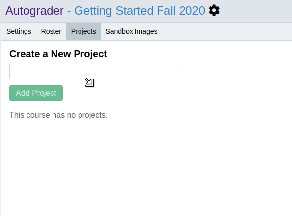
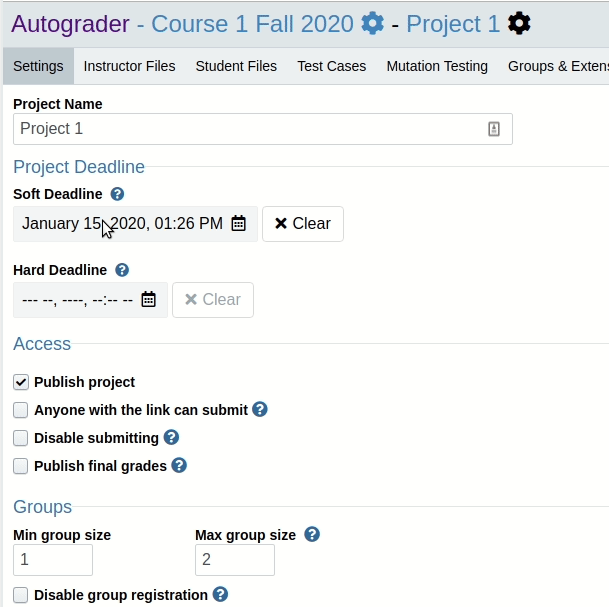
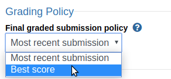

Creating Your First Project¶
In the admin page for your course, click on the Projects tab. Then, enter the name for your new project and click “Add Project”. Once the project has been created, click on the gear icon to go to the project admin page.
Set the Hard and Soft Deadlines¶
Autograder.io provides two deadline settings:
Hard Deadline: After this passes, students will no longer be able to submit their code. Unlike the soft deadline, this value is hidden from students and staff. If late day tokens are allowed, submitting after this deadline will automatically use those tokens as appropriate.
Soft Deadline: This is the deadline that is shown to students. It does NOT affect students’ ability to submit their code and will not cause late day tokens to be used.
Set these deadlines to your desired values, or leave them blank if you prefer.
(Optional) Enable Group Work¶
Autograder.io supports students working and submitting together in groups. Students in a group will be able to see each other’s submissions along with their own combined seamlessly into one list.

To disable group work, set the min and max group size to 1 (this is the default).
When group work is enablead and students visit the project submission page for the first time, they will be prompted to send an invitation to the student(s) they wish to be in a group with. Those students must then visit the project submission page and accept the invitation.
(Optional) Limit How Many Times Students Can Submit Per Day¶
You can choose to limit the number of times an individual student or group can submit per day. By default, an individual student will get the same number of submissions per day as a group (you can override this by checking the “Groups get more submissions than individuals” box).
Once you set a limit, you have two choices for how the limit is enforced:
A hard cutoff: Students will not be able to submit for the rest of the day once they hit the submission limit.
A soft cutoff: Students can continue to submit, but they will only see reduced feedback for those submissions.
For soft cutoff, check the “Allow submissions past limit” box. For a hard cutoff, uncheck it.

Set the timezone for “Reset submissions per day at” to your local timezone¶

Choose a Grading Policy (Best or Most Recent Submission)¶
Choose whether to use students’ best or most recent submission for their final project grade. We recommend taking the best submission when using the hard cutoff for submission limits or taking the most recent submission when using the soft cutoff.
